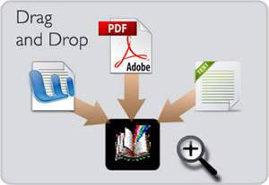
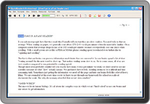
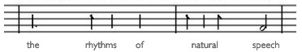

Now for a limited time
Get RapidReader Standard FREE!
a $29.95 value


How Does RapidReader Work?
Reading is as Easy as Watching a Movie
R
apidReader's technology works by optimizing the display of text to eliminate the most common barriers to reading speed: having to move your eyes across a line of text and "sounding out" words to yourself. It uses the power of the computer to enhance your ability to read much faster. This however is much more complicated than just displaying words on a screen. HOW the words are displayed is the key to everyday practicality for accelerating your reading speed and ergonomic comfort. After more than 10 years of research and development RapidReader was created specifically for this purpose. It is unique in it's ability to immediately multiply your reading speed, and do it easily and comfortably. This is the result of RapidReader's patented Human Cadence™ technology which analyses the content you want to read and then displays it to you in the natural rhythms of human speech. This breakthrough means greater comprehension, reduced eye fatigue and "lean-back" comfort even at very high reading speeds.
| How it Works... | |||
|  |
|
||
|  |
|
||
 |
|||
|
|||
|
|
||
For best results let the tutorial guide you thorough the quickest way to get up to your "new normal" reading speed. It's included in the download folder. You can see what it's all about here and how you will be reading 500 wpm in less than 5 minutes. |
|||
Why RapidReader Works: The Nature of Reading
In the Beginning: The Search for Faster Reading
What would it take to read faster? That was the question clinical researchers had been asking for years. And they found some answers. The method used in the original Johns Hopkins study (and many other studies since) is called "Rapid Serial Visual Display" (RSVP). It has a number of powerful advantages when it comes to accelerating your reading speed.
The immediate increase in reading speed that people saw in the lab was the result of changing the display of text into a sort of movie. What they did was display each word, one at a time, as if it were a frame of a film or video. This "movie" (actually an article about yacht building) formed a stream of words shown in a large font in the center of the field of view. While the change seems simple the effect was profound. All the reader had to do was sit back and view the text like they would a movie. In minutes the people in that room were reading and comprehending 1600 words per minute.*
However there was a catch. People found RSVP to be uncomfortable for reading for more than a few minutes at a time. The repetitive, robotic, metronome quality of the display was tiring and unnatural. This turns out to be a central problem to the use of this technology in everyday life.
*For more about the psycho-physiology of accelerated reading please visit the "Science behind RapidReader" page.
Take a new kind of high speed text display from the laboratory and then add the rhythms of human speech for greater ease and comprehension and you have RapidReader.
The RapidReader Difference:The Importance of the Rhythm of Human Speech
RapidReader goes far beyond basic RSVP . It took nearly 10 years of research and testing with thousands of people to find a breakthrough for the problem of ease and comfort. Where RapidReader is unique is its patented ability to modify the display of text content to deliver it in the natural rhythms of human speech. This results in far easier reading and most importantly. enhanced comprehension even at very high speeds.

If you think back to any conversation you've had you'll realize that verbal communication is filled with pauses and timing for emphasis. This contributes greatly to our understanding. RapidReader is able to provide this important aspect of comprehension by analyzing the document file to create the timing for the appearance of each word. In other words It is designed to mimic human speech. Getting this timing right took several years of research and development. As you change your reading speed, the rhythm adapts to retain comfort, naturalness and increase comprehension. The result is unparalleled ease for everyday use.

Why is Reading Faster So Difficult?
There are, two primary reasons for the "information bottleneck" when we read.
- Having to Move our Eyes Along a Line of Text
- "Sounding Out" the Words as We Read
Eye Movement
Eye movement is one of the principal barriers to reading speed. For thousands of years we've essentially had to read the same way. And, like most things in human history reading relied on muscle power. We didn't really have a choice. We had to use muscles to move our eyes from one word to the next. Compared with how fast we think it's extremely inefficient. Gathering text this way is a constant process of targeting and coordinating a complex sequence of muscle actions called "saccadic movement".

What our eyes do on the page is similar to reading a message on a sandy beach. You have to use your muscles to walk to each word then stop and focus on it. Then move to the next word, stop and focus and so on. That's exactly what's going on when you're reading text in a line on a page. Your eyes move-stop-focus-move-stop-focus over and over again. That's a lot of work. If you've ever suffered from eye fatigue you already know. It's also really slow compared with the incredible speed our brains can process information.
So RapidReader uses technology to eliminate most of the work your eyes must do by delivering the words directly into your field of view.
"Sounding Out" Words to Ourselves
Another major factor that slows us down is "sounding out" words to ourselves as we read them.
This is a left over from when we were learning to read as children. Humans are "hardwired" for speech. Most of us naturally start speaking very early. Reading however is another matter. The way we learn to read is by associating something written on the page with the familiar spoken sound it represents. Your teacher or parent would point to a word in a book and pronounce it for you. Eventually you'd make the association between the symbol you saw and the sound. For instance you'd learn to recognize "C-A-T" as the symbol for a furry animal that scratches up the furniture. However, once you learned to recognize the symbol, you no longer needed to pronounce it to know what it means.
The key word here is SYMBOL. Words are just like any symbol that's used to represent something. All you need to do is recognize its SHAPE and you know what it means virtually instantly. This is because humans are blazingly fast at visual pattern recognition and processing those patterns into meaning.
To see what we mean take the little test in the graphic on the left. Share it with friends to see how fast they can do it.
We Humans are Blazingly Fast at Pattern Recognition
Think about driving down the street and seeing a STOP sign. You don't say the word "STOP" to yourself. Hopefully you just put on the brakes because you instantly recognized what the symbol meant. So in terms of reading speed every time you pronounce a word to yourself it's like going through a toll booth on the highway. It costs you.

The good news is that when you get past a certain reading speed the tendency to sound out goes away.* With RR you're simply reading too fast for using the speech centers to translate a symbol into sound in your head. Suddenly you begin to read by understanding what you're seeing instead of by talking to yourself. You're now actually using the much faster visual cortex to gather information.
In brain scans researchers discovered that RSVP type accelerated reading moved the process from the speech centers of the brain to the visual cortex.
*For more about the visual cortex, Broca's area and Wernicke's area in accelerated reading please visit the "Science behind RapidReader" page.
How Does RR work?: It uses the power of the computer to optimize the display to eliminate the most common barriers to reading speed.
- You don't have to move your eyes to find the next word.
- The display of words in natural rhythms increases comfort and comprehension
- The type size can be very large
- At higher speed the tendency to "sound out" the words disappears
- You can sit back and just watch the text flow without scrolling or turning pages
- The display eliminates distracting visual clutter on the screen
- Large Customizable Font
- Customizable viewing area
- Sit at any distance that's comfortable for you

DOWNLOAD IT FREE TO SEE FOR YOURSELF.
Now with just one-click, you can get through your "must
do" reading faster, easier and in a fraction of
the time it used to take. And that gives you more time
for the other things in life.
Please, don't take our word for it... Download your Free copy of RapidReader Standard for Windows.

Just Some of the Reasons You'll Want RapidReader PRO

-
Practical Use
- It's There Whenever You Need It
- Instantly Load PDF, MS Word, Web Pages, E-mail attachments
- Read Research, Business Reports, Academic Assignments
Speed and Ergonomic Comfort - Select your Reading Speed from 150-950 wpm
- Just Sit Back and Watch-- There's No Scrolling,
- Customize Your Font, Size and Screen Position
- Large Text Relieves Eyestrain
Information Efficiency
- 3 Views-- Paragraph, Turbo and Pause Mode
- Add Notes, Highlites and Bookmarks
- Save PDF, Web Pages as RapidReader Files
- Share as E-mail Attachments or via DropBox